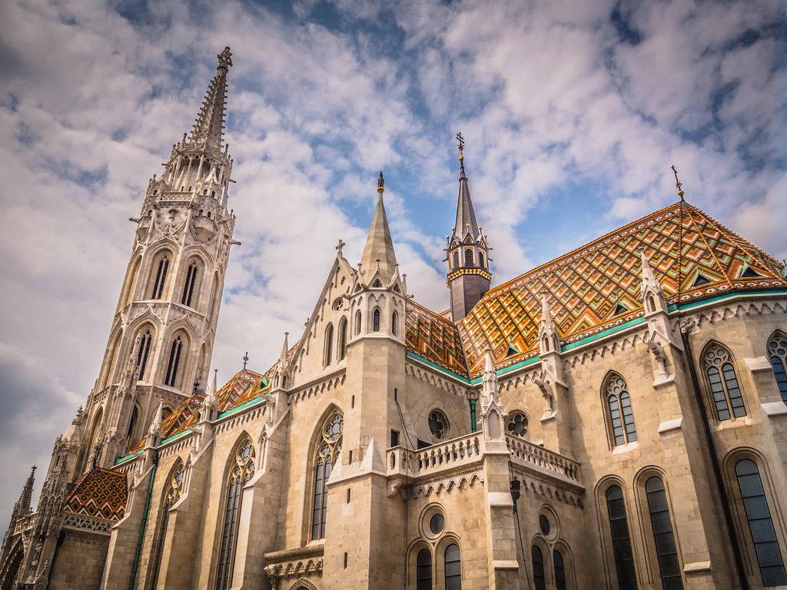
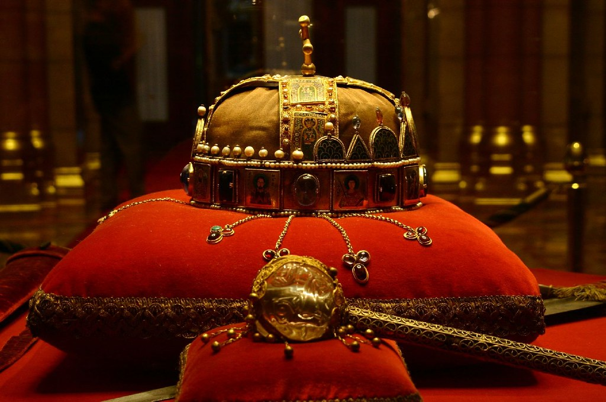
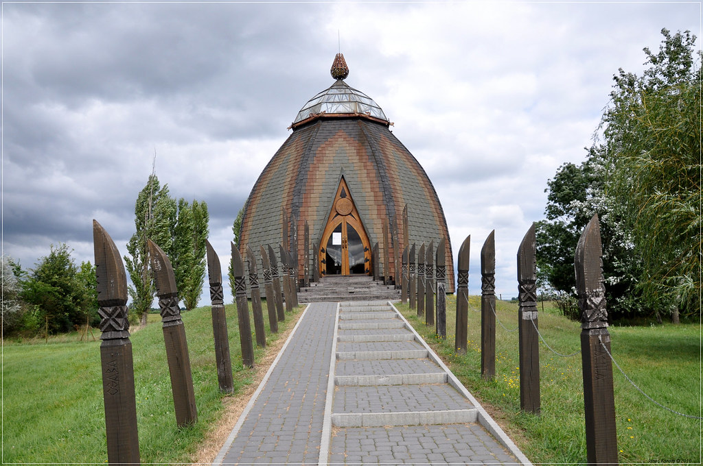
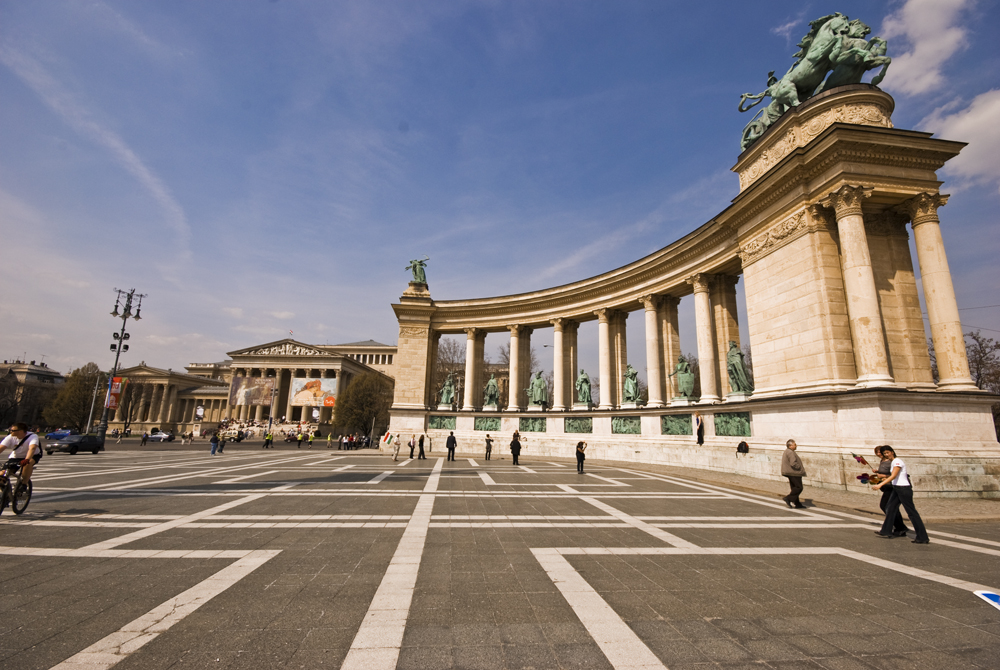
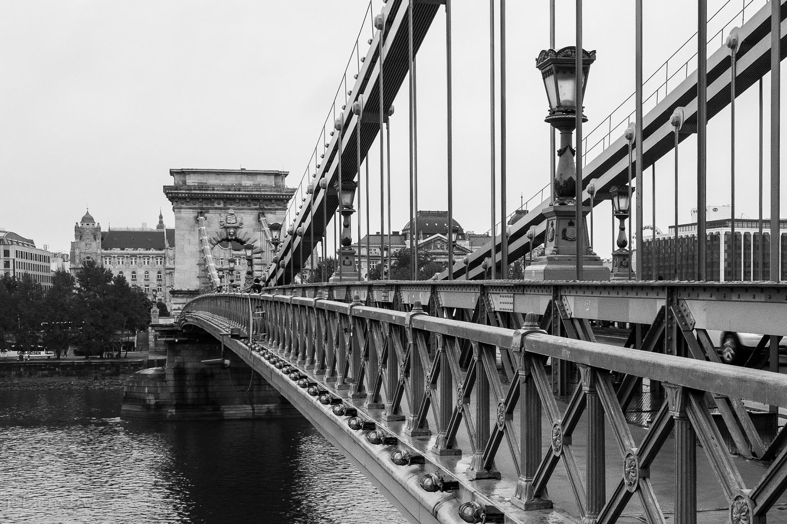

What are the most popular tourist attractions in Budapest?
Most tourists coming to Budapest visit the folllowing sights of the city: Buda Castle with the Castle District including the Fishermens's Bastion and Matthias Church, Gellért Hill, Margaret Island, Heroes' Square, the Parliament, St. Stephen's Basilica, the Opera Hause and Váci street.
The City Park is also popular, as it is the largest open space in Budapest and you can find the zoo, the funfair and the Vajdahunyad Castle there. The most visited museums in the capital are the Hungarian National Museum, the National Gallery,the Aquincum Museum and the Museum of Fine Arts.
On this website we will present only a few in more detail.
The Hungarian Parliament building, the “House of the Country”, located on the Danube bank, is an iconic building of Budapest’s World Heritage and is the home of legislature and the guardian of the Hungarian Holy Crown.
The Hungarian Parliament was inspired by the Houses of Parliament in London, so the neo-Gothic style is dominant, but it also bears Renaissance and Baroque features.
Today it is the third largest parliament in the world, built to commemorate the 1000th anniversary of the founding of the Hungarian state, based on the designs of architect Imre Steindl.
As I said before The Hungarian Parliament is the home of legislature and the guardian of the Hungarian Holy Crown so we are talking about a famous tourist attraction that you should not miss.
One of the earliest specialised museums in Europe, the Budapest Museum of Ethnography was born on March 5, 1872, when János Xántus (1825-1894) was appointed to the head of the Ethnography Department of the Hungarian National Museum.
The Museum of Ethnography's exhibition entitled Folk Culture of the Hungarians depicts the everyday life and festivals of the Hungarian peasantry.
The exhibition was refurbished in the year of the museum's anniversary and, with the addition of new multimedia technologies, has been made more colourful and spectacular than ever before.
The Budapest Museum of Ethnography, one of Europe’s most prestigious social science museums, houses more than 200,000 ethnographic artefacts, coupled with a unique archive of photographs, manuscripts, folk music recordings, and films.
If you want to learn about Hungarian ethnographic habbit, you should definitely visit here.
Heroes' Square, is one of the major squares in Budapest, Hungary, noted for its iconic Millennium Monument with statues featuring the Seven chieftains of the Magyars and other important Hungarian national leaders, as well as the Memorial Stone of Heroes.
By 1929, the whole composition was completed, including a gallery of statues of the most important rulers of a thousand years, a group of statues of the seven chieftains of Hungarians, with the symbolic tomb of Hungarian heroes in front of it and a statue of Archangel Gabriel at the top of the column.
Heroes’ Square offers a summary history lesson to visitors: the works of art here embrace the entire history of the nation and the country, and remind not only of the victims of wars, but also of the artists and the works of art of peacetime and the values of Hungarian culture.
Budapest’s Heroes’ Square and Andrássy Avenue are UNESCO World Heritage sites.
If you want to learn about Hungarian history, you should definitely visit here.
Before it was built, the river could only be crossed via a temporary pontoon bridge, by boat or over the ice.
However, a big city needed a real, stones and mortar bridge to match, which is why Count István Széchenyi, the “greatest Hungarian”, made every possible effort to ensure it got built: he made studies abroad, had various different plans made, visited factories and experimented with materials.
The decisive step was made when he invited English engineer William Tierney Clark to Hungary, as well as his (unrelated) namesake, Scottish engineer Adam Clark, who ended up building the bridge.
Completed in 1849, it was considered a technical wonder of its time. In World War II, the bridge was destroyed, along with all the other bridges in Budapest, but was rebuilt almost in its original form, except for some necessary modernisation.
If you want to see this mighty bridge, you should definitely visit here.